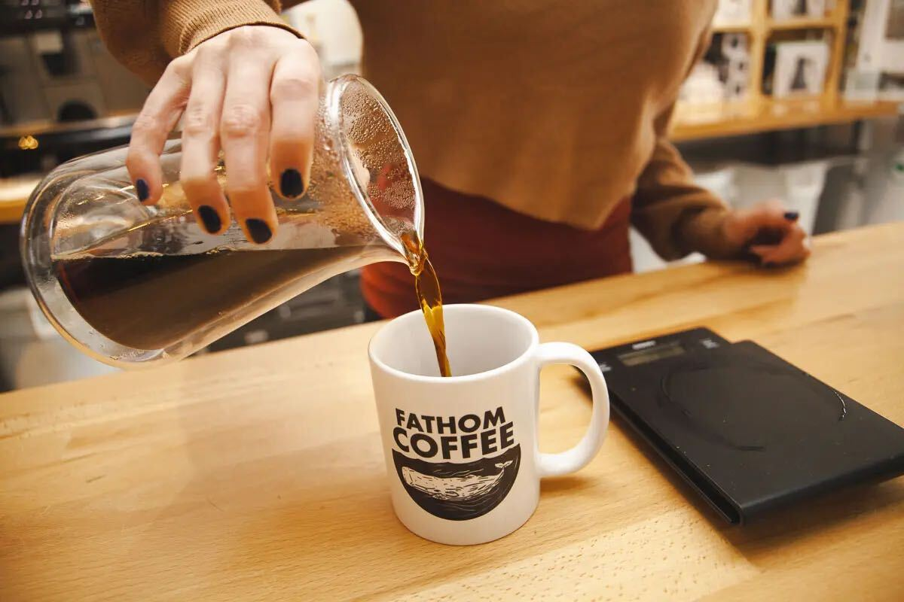
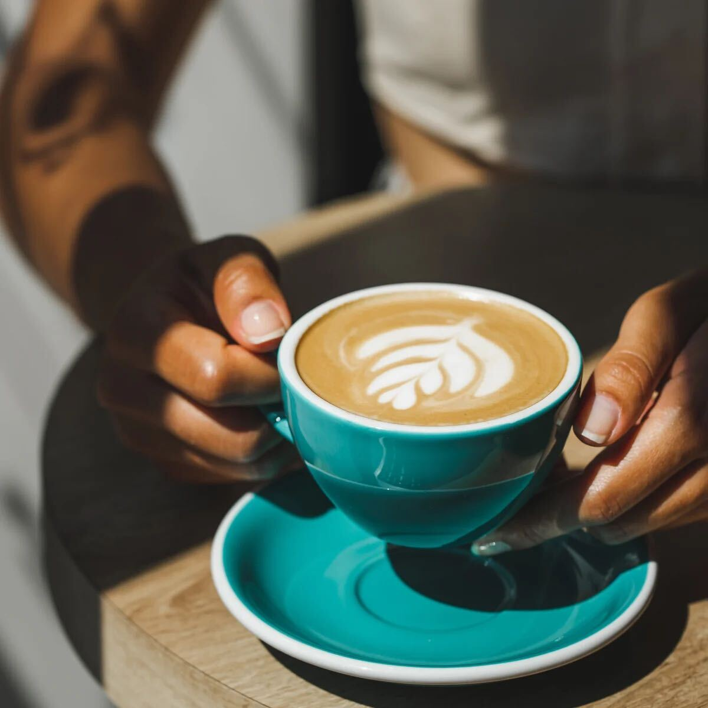
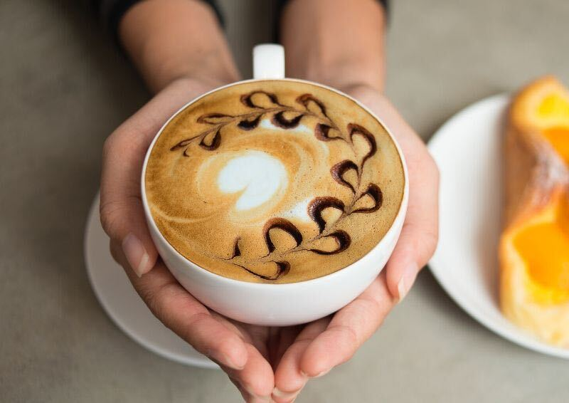

Ideas worth sharing
Thoughts for a
fuller life.
Notes on coffee, culture, business and the small things that make a difference.
The journal · 6 stories
Stories, perspectives and discoveries from the world around us.

Coffee Culture Around the World
A look at the rituals, places and communities that make coffee more than a drink.
Read story ↗
Why Coffee Is More Than Just a Morning Drink
How a simple cup can create connection, rhythm and belonging.
Read story ↗
The Quiet Magic of Your First Cup
The small daily pause that can set the tone for a more intentional day.
Read story ↗
Brewing Methods 101: Finding the One That Fits You
A beginner-friendly guide to choosing a brewing method that suits your taste.
Read story ↗
From Ethiopia to Your Cup: The Story of Coffee
Following coffee from its origins to the people who bring it to your table.
Read story ↗ Coffee · JournalThe Surprising Health Benefits of Your Daily Cup
A balanced look at coffee, wellbeing and enjoying your cup mindfully.
Read story ↗